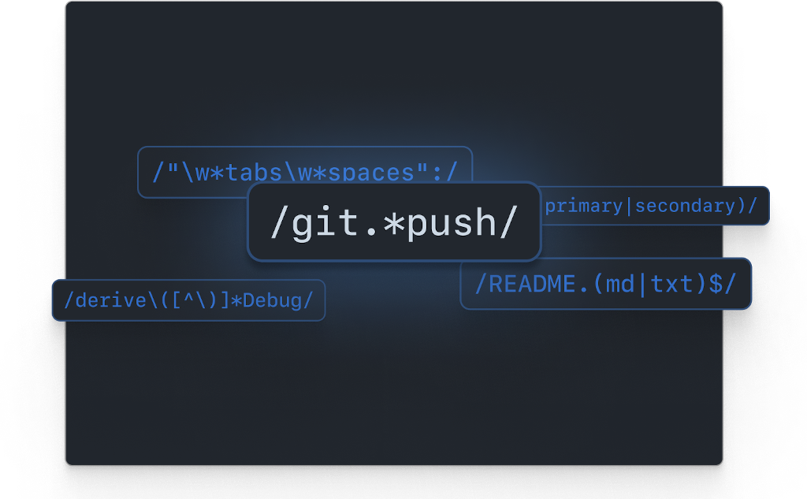
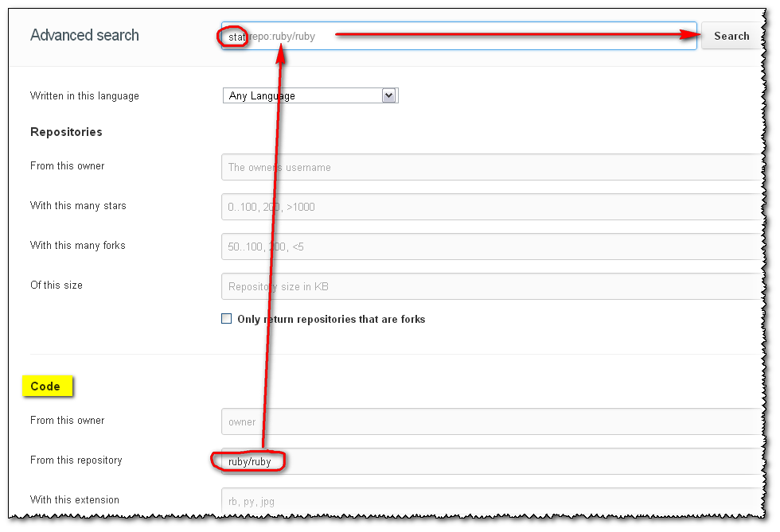
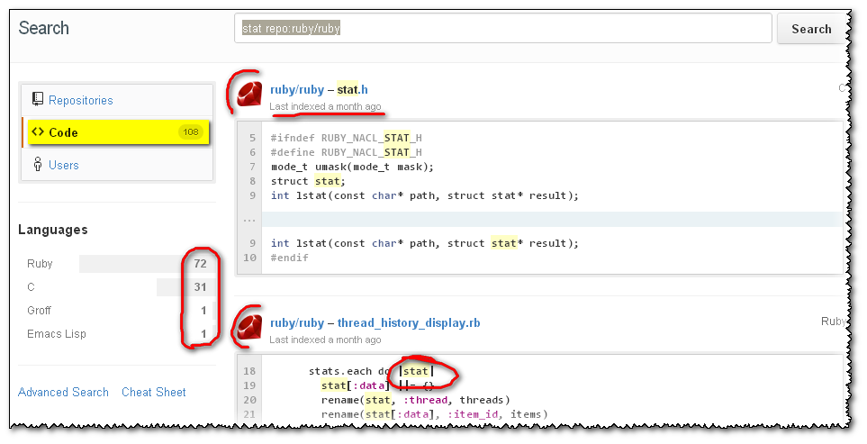
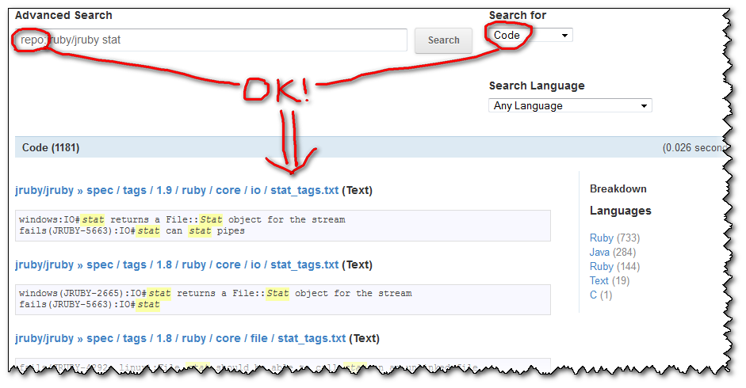
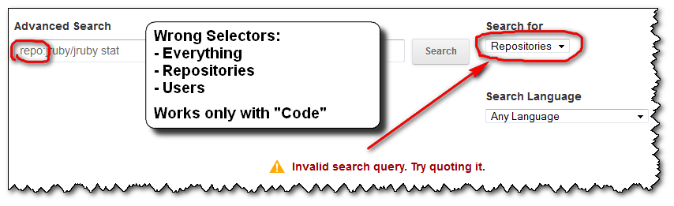
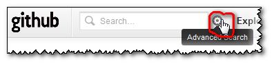
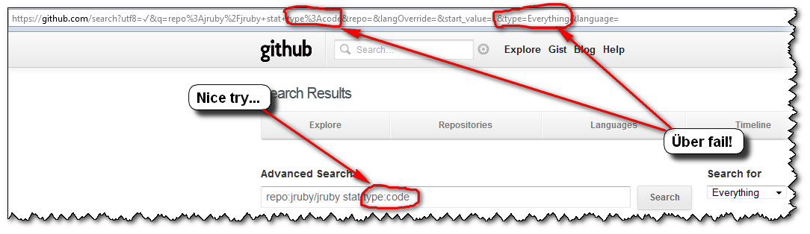
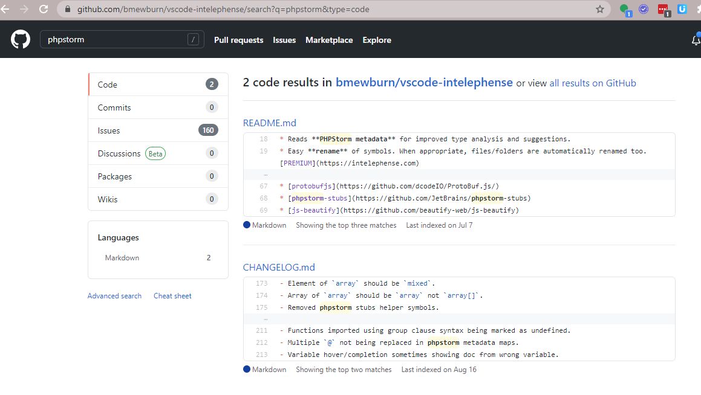

Search code inside a Github project
Is there a way to grep for something inside a Github project's code?
I could pull the source and grep it locally, but I was wondering if it's possible through the web interface or a 3rd-party alternative.
Ideas?
Answer
Update Dec. 2021: search has been improved again, with Search for an exact string, with support for substring matches and special characters, or regexps.

But only on cs.github.com , and still in beta (waitlist applies)
Update January 2013: a brand new search has arrived! , based on elasticsearch.org :
A search for stat within the ruby repo will be expressed as stat
repo:ruby/ruby , and will now just workTM.
(the repo name is not case sensitive: test repo:wordpress/wordpress returns
the same as test repo:Wordpress/Wordpress)

Will give:

And you have many other examples of search, based on followers, or on forks, or...
Update July 2012 (old days of Lucene search and poor code indexing, combined with broken GUI, kept here for archive):
The search (based on SolrQuerySyntax) is now more permissive and the dreaded
"Invalid search query. Try quoting it." is gone when using the default
search selector "Everything":)
(I suppose we can all than Tim Pease , which had in one of his objectives "hacking on improved search experiences for all GitHub properties", and I did mention this Stack Overflow question at the time ;) )
Here is an illustration of a grep within the ruby code: it will looks for repos and users, but also for what I wanted to search in the first place: the code!

Initial answer and illustration of the former issue (Sept. 2012 => March 2012)
You can use the advanced search GitHub form:
- Choose
Code,RepositoriesorUsersfrom the drop-down and - use the corresponding prefixes listed for that search type.
For instance, Use the repo:username/repo-name directive to limit the
search to a code repository.
The initial "Advanced Search" page includes the section:
Code Search:
The Code search will look through all of the code publicly hosted on GitHub. You can also filter by :
- the language
language:- the repository name (including the username)
repo:- the file path
path:
So if you select the "Code" search selector, then your query grepping for a
text within a repo will work:

What is incredibly unhelpful from GitHub is that:
- if you forget to put the right search selector (here "
Code"), you will get an error message:
"Invalid search query. Try quoting it."

-
the error message doesn't help you at all.
No amount of "quoting it" will get you out of this error. -
once you get that error message, you don't get the sections reminding you of the right association between the search selectors ("
Repositories", "Users" or "Language") and the (right) search filters (here "repo:").
Any further attempt you do won't display those associations (selectors- filters) back. Only the error message you see above...
The only way to get back those arrays is by clicking the "Advance Search" icon:

-
the "
Everything" search selector, which is the default, is actually the wrong one for all of the search filters! Except "language:"...
(You could imagine/assume that "Everything" would help you to pick whatever search selector actually works with the search filter "repo:", but nope. That would be too easy) -
you cannot specify the search selector you want through the "
Advance Search" field alone!
(but you can for "language:", even though "Search Language" is another combo box just below the "Search for" 'type' one...)

So, the user's experience usually is as follows:
- you click "
Advanced Search", glance over those sections of filters, and notice one you want to use: "repo:" -
you make a first advanced search "
repo:jruby/jruby stat", but with the default Search selector "Everything"
=>FAIL! (and the arrays displaying the association "Selectors-Filters" is gone ) -
you notice that "Search for" selector thingy, select the first choice "
Repositories" ("Dah! I want to search within repositories...")
=>FAIL! -
dejected, you select the next choice of selectors (here, "
Users"), without even looking at said selector, just to give it one more try...
=>FAIL! -
"Screw this, GitHub search is broken! I'm outta here!"
...
(GitHub advanced search is actually not broken. Only their GUI is...)
So, to recap, if you want to "grep for something inside a Github project's
code", as the OP Ben Humphreys, don't forget to select the "Code" search
selector...
Suggest
To seach within a repository, add the URL parametes /search?q=search_terms
at the root of the repo, for example:
https://github.com/bmewburn/vscode-intelephense/search?q=phpstorm

In the above example, it returns 2 results in Code and 160 results in Issues.